pacman::p_load(tidyverse, sf, tmap, maptools, spatstat, spNetwork, classInt, viridis, smoothr, arrow, stringr, RColorBrewer, gifski)Take-Home Exercise 1
Take-Home Exercise
Take-Home Exercise 1
1.0 Overview
1.1 Objectives
Exercise Requirements
- Using appropriate function of sf and tidyverse, preparing the following geospatial data layer in sf tibble data.frames:
Grab taxi location points either by origins or destinations.
Road layer within Singapore excluding outer islands.
Singapore boundary layer excluding outer islands
- Using the extracted data, derive traditional Kernel Density Estimation layers.
- Using the extracted data, derive either Network Kernel Density Estimation (NKDE) or Temporal Network Kernel Density Estimation (TNKDE) Using appropriate tmap functions, display the kernel density layers on OpenStreetMaps of Singapore.
- Describe the spatial patterns revealed by the kernel density maps.
1.2 Approach
This exercise seems quite straightforward, but I think that some genuinely useful information can be derived from this data. While removing the outer islands can be done fairly easily, I think that other small issues, like holes in the geometry will need to be fixed.
NKDE may also require very long computation times for large areas, especially given the magnitude of the entire dataset. The GrabPosisi dataset’s journey start and destination locations likely occur along smaller roads where people can walk. These small roads are likely near other small roads, which will greatly increase the number of affect lixels for every NKDE operation. Since these small roads will have the most interesting data, I will have to scale down my analysis to smaller locations determined by the simpler KDE analysis.
2.0 Setup
2.1 Dependencies
Aside from the tools used in class, I also included some additional tools I found useful.
Taught in class:
Tidyverse: An extensive set of tools for geospatial analysis, a staple for most tasks
sf: I also cannot imagine a geospatial task without simple features
tmap: Used to generate thematic maps
maptools: Used to handle spatial objects
spatstat: Just recently used in the hands-on exercises for this week. Useful for spatial point analysis
spNetwork: For spatial analysis on networks, we’ll use this for NKDE and TNKDE
classInt: For choosing univariate class intervals
viridis: COLORS! These will help us create more interesting and colorful maps to communicate our ideas
arrow: We need this to work with parquet files and to load the GrabPosisi dataset
Exploration
stringr: The Description field in kml files is not very convenient for us. It’s an HTML table, meaning we need to parse it to get each variable into a column compatible for our use
smoothr: The MPSZ2019 polygons have small holes, so I use this library to fix them before they cause issues
RColorBrewer: Used to create alternative NKDE and TNKDE visualisation which I found to work better than those that only change the color of the lines of the network
gifski: To animate our TNKDE results
2.2 Datasets
Aspatial data
- Grab-Posisi Singapore dataset
Geospatial data
- Road data set from Geofabrik’s OpenStreetMap.
- Although the dataset includes all of Malaysia, Singapore, and Brunei, only Singapore’s data will required.
- Master Plan 2019 Subzone Boundary (No Sea) from Data.gov.sg.
3.0 Data Wrangling
3.1 Importing Aspatial Data
Reading the Grab-Posisi Parquet Files
I’m glad this function from the arrow library exists to load every split parquet file instead of having to loop and append each file to a single object.
grabp <- open_dataset("data/aspatial/GrabPosisi/") %>% as.data.frame()3.2 Importing Spatial Data
Reading the Master Plan Subzone dataset
Using st_read is a standard way to import the data in kml files, but there’s a very apparent problem.
The description field, when not rendered, is a monstrous chunk of HTML where none of the fields are easy to use. We’ll need to split this up so that we can scope down our analysis later to interesting areas. There are no public roads in the jungle after all.
mpsz = st_read("data/geospatial/MasterPlan2019SubzoneBoundaryNoSeaKML.kml")Reading layer `URA_MP19_SUBZONE_NO_SEA_PL' from data source
`/Users/matthewho/Work/Y3S2/IS415/Website/IS415/TakeHomeEx/TakeHomeEx1/data/geospatial/MasterPlan2019SubzoneBoundaryNoSeaKML.kml'
using driver `KML'
Simple feature collection with 332 features and 2 fields
Geometry type: MULTIPOLYGON
Dimension: XY, XYZ
Bounding box: xmin: 103.6057 ymin: 1.158699 xmax: 104.0885 ymax: 1.470775
z_range: zmin: 0 zmax: 0
Geodetic CRS: WGS 84mpsz$Description[1][1] "<center><table><tr><th colspan='2' align='center'><em>Attributes</em></th></tr><tr bgcolor=\"#E3E3F3\"> <th>SUBZONE_NO</th> <td>12</td> </tr><tr bgcolor=\"\"> <th>SUBZONE_N</th> <td>DEPOT ROAD</td> </tr><tr bgcolor=\"#E3E3F3\"> <th>SUBZONE_C</th> <td>BMSZ12</td> </tr><tr bgcolor=\"\"> <th>CA_IND</th> <td>N</td> </tr><tr bgcolor=\"#E3E3F3\"> <th>PLN_AREA_N</th> <td>BUKIT MERAH</td> </tr><tr bgcolor=\"\"> <th>PLN_AREA_C</th> <td>BM</td> </tr><tr bgcolor=\"#E3E3F3\"> <th>REGION_N</th> <td>CENTRAL REGION</td> </tr><tr bgcolor=\"\"> <th>REGION_C</th> <td>CR</td> </tr><tr bgcolor=\"#E3E3F3\"> <th>INC_CRC</th> <td>C22DED671DE2A940</td> </tr><tr bgcolor=\"\"> <th>FMEL_UPD_D</th> <td>20191223152313</td> </tr></table></center>"I found a concise and performant solution here to parse this mess of HTML.
https://www.linkedin.com/pulse/r-using-stringr-extract-information-from-html-tags-kml-melvin-kew/
mpsz <- mpsz %>%
mutate(Match=str_match_all(Description,"<td>(.*?)</td>")) %>%
mutate(Match=map(Match, ~ .[,2])) %>%
mutate(Match=map(Match,setNames,c("SUBZONE_NO","SUBZONE_N","SUBZONE_C", "CA_IND", "PLN_AREA_N", "PLN_AREA_C", "REGION_N", "REGION_C", "INC_CRC", "FMEL_UPD_D"))) %>%
unnest_wider(Match) %>%
st_as_sf()After splitting the description into columns, I can drop the Description and other fields I will not be using. Although the planning areas should suffice, having region and subzone names available does not consume a lot of memory and may be useful later on.
summary(mpsz) Name Description geometry SUBZONE_NO
Length:332 Length:332 MULTIPOLYGON : 11 Length:332
Class :character Class :character MULTIPOLYGON Z:321 Class :character
Mode :character Mode :character epsg:4326 : 0 Mode :character
+proj=long... : 0
SUBZONE_N SUBZONE_C CA_IND PLN_AREA_N
Length:332 Length:332 Length:332 Length:332
Class :character Class :character Class :character Class :character
Mode :character Mode :character Mode :character Mode :character
PLN_AREA_C REGION_N REGION_C INC_CRC
Length:332 Length:332 Length:332 Length:332
Class :character Class :character Class :character Class :character
Mode :character Mode :character Mode :character Mode :character
FMEL_UPD_D
Length:332
Class :character
Mode :character
mpsz <- mpsz %>% dplyr::select('Name', 'geometry', 'SUBZONE_NO', 'SUBZONE_N', 'PLN_AREA_N', 'PLN_AREA_C', 'REGION_N', 'REGION_C')
summary(mpsz) Name geometry SUBZONE_NO SUBZONE_N
Length:332 MULTIPOLYGON : 11 Length:332 Length:332
Class :character MULTIPOLYGON Z:321 Class :character Class :character
Mode :character epsg:4326 : 0 Mode :character Mode :character
+proj=long... : 0
PLN_AREA_N PLN_AREA_C REGION_N REGION_C
Length:332 Length:332 Length:332 Length:332
Class :character Class :character Class :character Class :character
Mode :character Mode :character Mode :character Mode :character
length(which(st_is_valid(mpsz) == FALSE))[1] 6mpsz[which(st_is_valid(mpsz) == FALSE), ]Simple feature collection with 6 features and 7 fields
Geometry type: MULTIPOLYGON
Dimension: XY, XYZ
Bounding box: xmin: 103.7098 ymin: 1.212326 xmax: 104.0885 ymax: 1.440698
z_range: zmin: 0 zmax: 0
Geodetic CRS: WGS 84
# A tibble: 6 × 8
Name geometry SUBZONE_NO SUBZONE_N PLN_AREA_N PLN_AREA_C
<chr> <MULTIPOLYGON [°]> <chr> <chr> <chr> <chr>
1 kml_30 (((103.8591 1.22068, 103.8… 2 SOUTHERN… SOUTHERN … SI
2 kml_31 (((103.8232 1.257481, 103.… 1 SENTOSA SOUTHERN … SI
3 kml_35 Z (((103.8236 1.260178 0, … 1 MARITIME… BUKIT MER… BM
4 kml_59 Z (((103.9321 1.305548 0, … 7 SIGLAP BEDOK BD
5 kml_109 (((103.7119 1.29961, 103.7… 10 JURONG P… JURONG EA… JE
6 kml_318 (((104.0541 1.432306, 104.… 1 NORTH-EA… NORTH-EAS… NE
# ℹ 2 more variables: REGION_N <chr>, REGION_C <chr>mpsz <- st_make_valid(mpsz)
mpsz <- st_zm(mpsz)Importing the OpenStreetMaps dataset
osm = st_read("data/geospatial/osm.shp.zip", layer="gis_osm_roads_free_1")Reading layer `gis_osm_roads_free_1' from data source
`/Users/matthewho/Work/Y3S2/IS415/Website/IS415/TakeHomeEx/TakeHomeEx1/data/geospatial/osm.shp.zip'
using driver `ESRI Shapefile'
Simple feature collection with 1763129 features and 10 fields
Geometry type: LINESTRING
Dimension: XY
Bounding box: xmin: 99.66041 ymin: 0.8021131 xmax: 119.2601 ymax: 7.514393
Geodetic CRS: WGS 843.2 Wrangling
GrabPosisi conversion to spatial data
The GrabPosisi dataset consists of many points for each journey, represented with latitudes and longitudes. There are also many other fields representing speed and direction of the vehicle. We only need to know about the start and end locations.
head(grabp)# A tibble: 6 × 9
trj_id driving_mode osname pingtimestamp rawlat rawlng speed bearing accuracy
<chr> <chr> <chr> <int> <dbl> <dbl> <dbl> <int> <dbl>
1 70014 car android 1554943236 1.34 104. 18.9 248 3.9
2 73573 car android 1555582623 1.32 104. 17.7 44 4
3 75567 car android 1555141026 1.33 104. 14.0 34 3.9
4 1410 car android 1555731693 1.26 104. 13.0 181 4
5 4354 car android 1555584497 1.28 104. 14.8 93 3.9
6 32630 car android 1555395258 1.30 104. 23.2 73 3.9The easiest thing to fix first is the timestamp. Doing so will allow us to find the first and last points of a journey easily. We also need to make sure that we account for timezones properly here, since the timestamps written as a time since the epoch.
grabp$pingtimestamp <- as_datetime(grabp$pingtimestamp, tz = "Asia/Singapore")Now we convert the timestamp into weekdays, hours and days. This will help us temporally constrain our data later on.
We also convert the latitudes and longitudes to the SVY21 CRS system to give our task a standardised projection system.
origin_df <- grabp %>%
group_by(trj_id) %>%
arrange(pingtimestamp) %>%
filter(row_number()==1) %>%
mutate(weekday = wday(pingtimestamp,
label=TRUE,
abbr=TRUE),
start_hr = factor(hour(pingtimestamp)),
day = factor(mday(pingtimestamp))) %>%
st_as_sf(coords = c("rawlng", "rawlat"),
crs = 4326) %>%
st_transform(crs = 3414)
destination_df <- grabp %>%
group_by(trj_id) %>%
arrange(desc(pingtimestamp)) %>%
filter(row_number()==1) %>%
mutate(weekday = wday(pingtimestamp,
label=TRUE,
abbr=TRUE),
end_hr = factor(hour(pingtimestamp)),
day = factor(mday(pingtimestamp))) %>%
st_as_sf(coords = c("rawlng", "rawlat"),
crs = 4326) %>%
st_transform(crs = 3414)
head(origin_df)Simple feature collection with 6 features and 10 fields
Geometry type: POINT
Dimension: XY
Bounding box: xmin: 17201.85 ymin: 29236.55 xmax: 31518.05 ymax: 47967.97
Projected CRS: SVY21 / Singapore TM
# A tibble: 6 × 11
# Groups: trj_id [6]
trj_id driving_mode osname pingtimestamp speed bearing accuracy weekday
<chr> <chr> <chr> <dttm> <dbl> <int> <dbl> <ord>
1 70895 car andro… 2019-04-08 08:09:26 9.95 111 4 Mon
2 21926 car andro… 2019-04-08 08:09:48 11.0 75 4 Mon
3 47498 car ios 2019-04-08 08:09:50 18.6 307 8 Mon
4 18103 car andro… 2019-04-08 08:09:55 0.404 159 3 Mon
5 41322 car andro… 2019-04-08 08:09:57 17.9 232 3.9 Mon
6 64813 car ios 2019-04-08 08:10:03 17.1 106 10 Mon
# ℹ 3 more variables: start_hr <fct>, day <fct>, geometry <POINT [m]>head(destination_df)Simple feature collection with 6 features and 10 fields
Geometry type: POINT
Dimension: XY
Bounding box: xmin: 14101.2 ymin: 33097.49 xmax: 44192.98 ymax: 46866.96
Projected CRS: SVY21 / Singapore TM
# A tibble: 6 × 11
# Groups: trj_id [6]
trj_id driving_mode osname pingtimestamp speed bearing accuracy weekday
<chr> <chr> <chr> <dttm> <dbl> <int> <dbl> <ord>
1 81574 car ios 2019-04-22 07:56:49 15.3 103 8 Mon
2 54687 car android 2019-04-22 07:56:46 8.15 299 4.55 Mon
3 17190 car android 2019-04-22 07:56:36 12.4 202 4 Mon
4 13793 car android 2019-04-22 07:56:30 6.47 170 3.9 Mon
5 39014 car ios 2019-04-22 07:56:27 3.59 169 4 Mon
6 41170 car ios 2019-04-22 07:56:13 13.1 71 5 Mon
# ℹ 3 more variables: end_hr <fct>, day <fct>, geometry <POINT [m]>After converting some of our data and reducing it to only the trip starts and ends, we can drop the unused columns.
origin_df <- origin_df %>% dplyr::select('trj_id', 'pingtimestamp', 'geometry', 'weekday', 'start_hr', 'day', 'geometry')
destination_df <- destination_df %>% dplyr::select('trj_id', 'pingtimestamp', 'geometry', 'weekday', 'end_hr', 'day', 'geometry')This was a massive task in terms of computer memory. To make sure we don’t have to do this again, we can save the objects into .rds files. I would consider this an advantage over using Python.
write_rds(origin_df, "data/rds/origin.rds")
write_rds(destination_df, "data/rds/destination.rds")destination_df <- read_rds("data/rds/destination.rds")
origin_df <- read_rds("data/rds/origin.rds")OpenStreetMaps reduction
There were many of ‘fclass’ values on the OpenStreetMaps documentation and I was not sure all of them existed in our dataset. It turns out that although there were more than expected, I can ‘whitelist’ some those that are definitely roads.
I found out about what each class meant from their documentation. https://www.geofabrik.de/data/geofabrik-osm-gis-standard-0.3.pdf
This was great since I had no idea what a Bridleway was.
summary(osm) osm_id code fclass name
Length:1763129 Min. :5111 Length:1763129 Length:1763129
Class :character 1st Qu.:5122 Class :character Class :character
Mode :character Median :5141 Mode :character Mode :character
Mean :5132
3rd Qu.:5141
Max. :5199
ref oneway maxspeed layer
Length:1763129 Length:1763129 Min. : 0.000 Min. :-5.00000
Class :character Class :character 1st Qu.: 0.000 1st Qu.: 0.00000
Mode :character Mode :character Median : 0.000 Median : 0.00000
Mean : 3.148 Mean : 0.02991
3rd Qu.: 0.000 3rd Qu.: 0.00000
Max. :110.000 Max. : 5.00000
bridge tunnel geometry
Length:1763129 Length:1763129 LINESTRING :1763129
Class :character Class :character epsg:4326 : 0
Mode :character Mode :character +proj=long...: 0
unique(osm$fclass) [1] "primary" "secondary" "residential" "service"
[5] "track" "tertiary" "footway" "primary_link"
[9] "motorway_link" "tertiary_link" "motorway" "unclassified"
[13] "trunk" "trunk_link" "secondary_link" "pedestrian"
[17] "living_street" "path" "steps" "cycleway"
[21] "track_grade2" "track_grade4" "track_grade1" "track_grade3"
[25] "unknown" "track_grade5" "bridleway" Of the above fclasses, these ones are definitely roads. We will keep them in our dataset.
values_to_keep <- c("primary", "secondary", "residential", "service", "tertiary", "primary_link", "motorway", "motorway_link", "tertiary_link", "living_street", "trunk", "trunk_link")
osm <- osm[osm$fclass %in% values_to_keep, ]From this, we have confirmed that we have dropped the unnecessary fclasses and greatly reduced the size of our data. However, to geographically constrain this dataset to Singapore, we need to process the MasterPlanSubzone data.
summary(osm) osm_id code fclass name
Length:1417871 Min. :5111 Length:1417871 Length:1417871
Class :character 1st Qu.:5122 Class :character Class :character
Mode :character Median :5132 Mode :character Mode :character
Mean :5131
3rd Qu.:5141
Max. :5141
ref oneway maxspeed layer
Length:1417871 Length:1417871 Min. : 0.000 Min. :-5.00000
Class :character Class :character 1st Qu.: 0.000 1st Qu.: 0.00000
Mode :character Mode :character Median : 0.000 Median : 0.00000
Mean : 3.665 Mean : 0.02351
3rd Qu.: 0.000 3rd Qu.: 0.00000
Max. :110.000 Max. : 5.00000
bridge tunnel geometry
Length:1417871 Length:1417871 LINESTRING :1417871
Class :character Class :character epsg:4326 : 0
Mode :character Mode :character +proj=long...: 0
unique(osm$fclass) [1] "primary" "secondary" "residential" "service"
[5] "tertiary" "primary_link" "motorway_link" "tertiary_link"
[9] "motorway" "trunk" "trunk_link" "living_street"For our purposes, the road data will only need to serve as a network, without all of the extra data. However, osm_id fclass may be useful later on and are relatively small. We can keep them.
osm <- osm %>% dplyr::select('osm_id', 'fclass')3.3 CRS Adjustments and Verification
OpenStreetMaps and MasterPlanSubzone CRS
It’s now time to go a bit deeper with the data wrangling now that the size of our data has decreased. First thing to do is to check the CRS for the MPSZ and OpenStreetMaps data since we have not already done so.
st_crs(mpsz)Coordinate Reference System:
User input: WGS 84
wkt:
GEOGCRS["WGS 84",
DATUM["World Geodetic System 1984",
ELLIPSOID["WGS 84",6378137,298.257223563,
LENGTHUNIT["metre",1]]],
PRIMEM["Greenwich",0,
ANGLEUNIT["degree",0.0174532925199433]],
CS[ellipsoidal,2],
AXIS["geodetic latitude (Lat)",north,
ORDER[1],
ANGLEUNIT["degree",0.0174532925199433]],
AXIS["geodetic longitude (Lon)",east,
ORDER[2],
ANGLEUNIT["degree",0.0174532925199433]],
ID["EPSG",4326]]st_crs(osm)Coordinate Reference System:
User input: WGS 84
wkt:
GEOGCRS["WGS 84",
DATUM["World Geodetic System 1984",
ELLIPSOID["WGS 84",6378137,298.257223563,
LENGTHUNIT["metre",1]]],
PRIMEM["Greenwich",0,
ANGLEUNIT["degree",0.0174532925199433]],
CS[ellipsoidal,2],
AXIS["latitude",north,
ORDER[1],
ANGLEUNIT["degree",0.0174532925199433]],
AXIS["longitude",east,
ORDER[2],
ANGLEUNIT["degree",0.0174532925199433]],
ID["EPSG",4326]]Like in the previous exercises, the CRS for these are not SVY21. We will change them since GovTech is yet to do so.
osm <- st_transform(osm, crs = 3414)
mpsz <- st_transform(mpsz, crs = 3414)Dealing with MPSZ z-coordinates and invalid geometry
To prevent issues with invalid geometry causing issues later on, we can apply a quick fix here.
length(which(st_is_valid(mpsz) == FALSE))[1] 0mpsz[which(st_is_valid(mpsz) == FALSE), ]Simple feature collection with 0 features and 7 fields
Bounding box: xmin: NA ymin: NA xmax: NA ymax: NA
Projected CRS: SVY21 / Singapore TM
# A tibble: 0 × 8
# ℹ 8 variables: Name <chr>, geometry <GEOMETRY [m]>, SUBZONE_NO <chr>,
# SUBZONE_N <chr>, PLN_AREA_N <chr>, PLN_AREA_C <chr>, REGION_N <chr>,
# REGION_C <chr>mpsz <- st_make_valid(mpsz)
mpsz <- st_zm(mpsz)A quick check confirms that the CRS has been changed successfully to SVY21
st_crs(mpsz)Coordinate Reference System:
User input: EPSG:3414
wkt:
PROJCRS["SVY21 / Singapore TM",
BASEGEOGCRS["SVY21",
DATUM["SVY21",
ELLIPSOID["WGS 84",6378137,298.257223563,
LENGTHUNIT["metre",1]]],
PRIMEM["Greenwich",0,
ANGLEUNIT["degree",0.0174532925199433]],
ID["EPSG",4757]],
CONVERSION["Singapore Transverse Mercator",
METHOD["Transverse Mercator",
ID["EPSG",9807]],
PARAMETER["Latitude of natural origin",1.36666666666667,
ANGLEUNIT["degree",0.0174532925199433],
ID["EPSG",8801]],
PARAMETER["Longitude of natural origin",103.833333333333,
ANGLEUNIT["degree",0.0174532925199433],
ID["EPSG",8802]],
PARAMETER["Scale factor at natural origin",1,
SCALEUNIT["unity",1],
ID["EPSG",8805]],
PARAMETER["False easting",28001.642,
LENGTHUNIT["metre",1],
ID["EPSG",8806]],
PARAMETER["False northing",38744.572,
LENGTHUNIT["metre",1],
ID["EPSG",8807]]],
CS[Cartesian,2],
AXIS["northing (N)",north,
ORDER[1],
LENGTHUNIT["metre",1]],
AXIS["easting (E)",east,
ORDER[2],
LENGTHUNIT["metre",1]],
USAGE[
SCOPE["Cadastre, engineering survey, topographic mapping."],
AREA["Singapore - onshore and offshore."],
BBOX[1.13,103.59,1.47,104.07]],
ID["EPSG",3414]]st_crs(osm)Coordinate Reference System:
User input: EPSG:3414
wkt:
PROJCRS["SVY21 / Singapore TM",
BASEGEOGCRS["SVY21",
DATUM["SVY21",
ELLIPSOID["WGS 84",6378137,298.257223563,
LENGTHUNIT["metre",1]]],
PRIMEM["Greenwich",0,
ANGLEUNIT["degree",0.0174532925199433]],
ID["EPSG",4757]],
CONVERSION["Singapore Transverse Mercator",
METHOD["Transverse Mercator",
ID["EPSG",9807]],
PARAMETER["Latitude of natural origin",1.36666666666667,
ANGLEUNIT["degree",0.0174532925199433],
ID["EPSG",8801]],
PARAMETER["Longitude of natural origin",103.833333333333,
ANGLEUNIT["degree",0.0174532925199433],
ID["EPSG",8802]],
PARAMETER["Scale factor at natural origin",1,
SCALEUNIT["unity",1],
ID["EPSG",8805]],
PARAMETER["False easting",28001.642,
LENGTHUNIT["metre",1],
ID["EPSG",8806]],
PARAMETER["False northing",38744.572,
LENGTHUNIT["metre",1],
ID["EPSG",8807]]],
CS[Cartesian,2],
AXIS["northing (N)",north,
ORDER[1],
LENGTHUNIT["metre",1]],
AXIS["easting (E)",east,
ORDER[2],
LENGTHUNIT["metre",1]],
USAGE[
SCOPE["Cadastre, engineering survey, topographic mapping."],
AREA["Singapore - onshore and offshore."],
BBOX[1.13,103.59,1.47,104.07]],
ID["EPSG",3414]]3.4 Singapore Boundaries
From this plot, I realised that there were more islands than I thought surrounding Singapore.
plot(st_geometry(mpsz))Based on the above plot, it became apparent that I needed to define what an “Outer Island” meant in relation to our task.
Outer Island Definition
An island in Singapore inaccessible by road
Therefore, Coney Island, Jurong Island and Sentosa are not outer islands.
Pulau Ubin and Pulau Tekong are examples of outer islands.
To remove the islands, I discovered a trick. After using st_union, st_cast can be used to split disconnected polygons in the larger multipolygon. I then choose the largest one (the mainland). Fortunately, the bridges to Serangoon island were enough to stick the whole of road-accessible Singapore together while excluding areas like Tekong.
We can also use fill_holes to remove any gaps in geometry.
After this process, we are left with a clean outline of Singapore!
Outer Island Removal and Hole Fixing
merged_sg <- st_union(mpsz) %>%
st_cast("POLYGON")
merged_sg <- merged_sg[c(10)]
merged_sg <- fill_holes(merged_sg, units::set_units(1, "km^2"))
merged_sg <- st_as_sf(merged_sg)
par(mfrow=c(1,2))
plot(st_geometry(mpsz))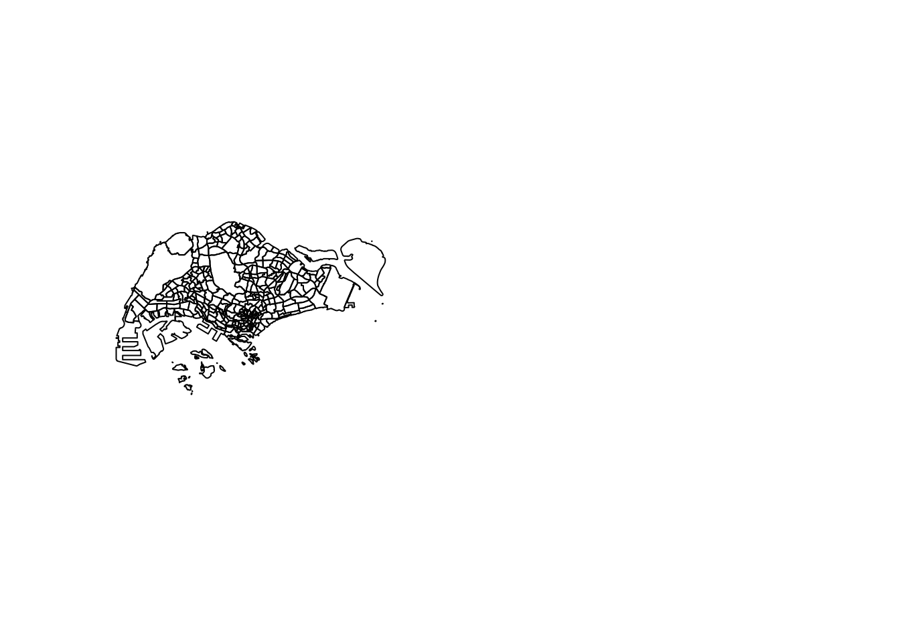
plot(st_geometry(merged_sg))
Applying the outline
With the outline, we can create an owin object to constrain our ppp objects later for KDE! We will save it to save us processing time later on.
merged_st <- as_Spatial(merged_sg)
merged_sg_sp <- as(merged_st, "SpatialPolygons")
merged_sg_owin <- as(merged_sg_sp, "owin")
write_rds(merged_sg_owin, "data/rds/merged_sg_owin.rds")merged_sg_owin <- read_rds("data/rds/merged_sg_owin.rds")Now we use the outline to remove the massive amount of data on Malaysian and Bruneian roads.
osm_sg <- st_intersection(osm, merged_sg)An unexpected complication found here was that some geometry in OpenStreetMaps was saved as MULTILINESTRINGs. While this would be intuitive sometimes, it caused issues with KDE calculation. Here, I split each MULTILNESTRING into several LINESTRINGs.
After this processing, I save the result
summary(osm_sg) osm_id fclass geometry
Length:157777 Length:157777 LINESTRING :157720
Class :character Class :character MULTILINESTRING: 57
Mode :character Mode :character epsg:3414 : 0
+proj=tmer... : 0 osm_sg <- st_cast(st_cast(osm_sg, "MULTILINESTRING"),"LINESTRING")
summary(osm_sg) osm_id fclass geometry
Length:157836 Length:157836 LINESTRING :157836
Class :character Class :character epsg:3414 : 0
Mode :character Mode :character +proj=tmer...: 0 write_rds(osm_sg, "data/rds/osm_sg.rds")osm_sg <- read_rds("data/rds/osm_sg.rds")ppp Format
To prepare our the data on trip starts and ends, we convert them into ppp objects.
origin <- as_Spatial(origin_df)
destination <- as_Spatial(destination_df)
origin_sp <- as(origin, "SpatialPoints")
destination_sp <- as(destination, "SpatialPoints")
origin_ppp <- as(origin_sp, "ppp")
destination_ppp <- as(destination_sp, "ppp")Using our previously prepared owin objects, we can constrain these points to only Singapore, in case any of the data was strangely placed outside of our borders.
This happened for 3 destinations. Regardless of whether these were caused by inaccuracy due to GPS drift near the coast or otherwise, the loss of these 3 points should not influence our downstream analysis by much. As such, it can be deemed an acceptable loss due to erring on the side of caution.
summary(destination_ppp)Planar point pattern: 28000 points
Average intensity 2.493661e-05 points per square unit
Coordinates are given to 3 decimal places
i.e. rounded to the nearest multiple of 0.001 units
Window: rectangle = [3637.21, 49870.63] x [25221.3, 49507.79] units
(46230 x 24290 units)
Window area = 1122850000 square unitsorigin_ppp <- origin_ppp[merged_sg_owin]
destination_ppp <- destination_ppp[merged_sg_owin]summary(destination_ppp)Planar point pattern: 27997 points
Average intensity 3.99481e-05 points per square unit
Coordinates are given to 3 decimal places
i.e. rounded to the nearest multiple of 0.001 units
Window: polygonal boundary
single connected closed polygon with 15268 vertices
enclosing rectangle: [2667.54, 51404.13] x [21448.48, 50256.33] units
(48740 x 28810 units)
Window area = 700834000 square units
Fraction of frame area: 0.499Checking for duplicates
Fortunately, no duplicates were detected in our dataset.
any(duplicated(origin_ppp))[1] FALSEany(duplicated(destination_ppp))[1] FALSE3.5 Simple Visualisations
From these plots, we can tell that naive methods of checking for patterns in spatial points does not work very well with large datasets. This is when we use KDE.
plot(origin_ppp)
plot(destination_ppp)
4.0 KDE
After all the wrangling, we can finally see our Kernel Density Estimates for origin and destinations! I first tried the quartic kernel with an automatically decided bandwidth, but realised that apart from Changi Airport, the rest of Singapore seemed dark.
origin_ppp.km <- rescale(origin_ppp, 1000, "km")
origin.bw <- density(origin_ppp.km,
sigma=bw.diggle,
edge=TRUE,
kernel="quartic")
plot(origin.bw)
destination_ppp.km <- rescale(destination_ppp, 1000, "km")
destination.bw <- density(destination_ppp.km,
sigma=bw.diggle,
edge=TRUE,
kernel="quartic")
plot(destination.bw)
I then tried the more gently sloping Gaussian kernel, to little effect.
origin_ppp.km <- rescale(origin_ppp, 1000, "km")
origin.bw <- density(origin_ppp.km,
sigma=bw.diggle,
edge=TRUE,
kernel="gaussian")
plot(origin.bw)
destination_ppp.km <- rescale(destination_ppp, 1000, "km")
destination.bw <- density(destination_ppp.km,
sigma=bw.diggle,
edge=TRUE,
kernel="gaussian")
plot(destination.bw)
I decided to check the bandwidth derived with the Diggle algorithm, which was surprisingly small, at 8m. I strongly suspect this to be caused by Changi airport, where a huge number of Grab trips start and end at the same few small dropoff/pickup points.
bw <- bw.diggle(destination_ppp.km)
bw sigma
0.008286046 bw <- bw.ppl(destination_ppp.km)
bw sigma
0.1826625 I then tried the PPL algorithm’s bandwidth, which did not have a significant effect either.
origin_ppp.km <- rescale(origin_ppp, 1000, "km")
origin.bw <- density(origin_ppp.km,
sigma=bw.ppl,
edge=TRUE,
kernel="gaussian")
plot(origin.bw)destination_ppp.km <- rescale(destination_ppp, 1000, "km")
destination.bw <- density(destination_ppp.km,
sigma=bw.ppl,
edge=TRUE,
kernel="gaussian")
plot(destination.bw)
I then tried to manually set a higher bandwidth in hopes of illuminating the map more.
sigm <- 0.5
origin_ppp.km <- rescale(origin_ppp, 1000, "km")
origin.bw <- density(origin_ppp.km,
sigma=sigm,
edge=TRUE,
kernel="gaussian")
plot(origin.bw)
destination_ppp.km <- rescale(destination_ppp, 1000, "km")
destination.bw <- density(destination_ppp.km,
sigma=sigm,
edge=TRUE,
kernel="gaussian")
plot(destination.bw)KDE Insights
From these KDE maps, I observed
Changi Airport and the CBD are frequently the origin and destination for Grab trips
Interestingly, the maps are different. It seems that there are more trips from presumably more residential areas such as the West and North to the CBD than the other way round. Perhaps people use grab when they are in a rush to get to work and take their time on the way home with public transport.
In both the origin and destination KDEs, there is a hotspot in the north, slightly to the west. That could correspond to the Woodlands checkpoint
5.0 NKDE
Study Areas
In the MPSZ dataset, some areas are conveniently segmented by PLN_AREA, making it easy to extract areas of interest. From the KDE results above, we ca choose several of the interesting zones below for NKDE.
- CHANGI: For the airport
- WOODLANDS: For the checkpoint and residential areas
- DOWNTOWN CORE, ORCHARD: The CBD and “town” area
sort(unique(mpsz$PLN_AREA_N)) [1] "ANG MO KIO" "BEDOK"
[3] "BISHAN" "BOON LAY"
[5] "BUKIT BATOK" "BUKIT MERAH"
[7] "BUKIT PANJANG" "BUKIT TIMAH"
[9] "CENTRAL WATER CATCHMENT" "CHANGI"
[11] "CHANGI BAY" "CHOA CHU KANG"
[13] "CLEMENTI" "DOWNTOWN CORE"
[15] "GEYLANG" "HOUGANG"
[17] "JURONG EAST" "JURONG WEST"
[19] "KALLANG" "LIM CHU KANG"
[21] "MANDAI" "MARINA EAST"
[23] "MARINA SOUTH" "MARINE PARADE"
[25] "MUSEUM" "NEWTON"
[27] "NORTH-EASTERN ISLANDS" "NOVENA"
[29] "ORCHARD" "OUTRAM"
[31] "PASIR RIS" "PAYA LEBAR"
[33] "PIONEER" "PUNGGOL"
[35] "QUEENSTOWN" "RIVER VALLEY"
[37] "ROCHOR" "SELETAR"
[39] "SEMBAWANG" "SENGKANG"
[41] "SERANGOON" "SIMPANG"
[43] "SINGAPORE RIVER" "SOUTHERN ISLANDS"
[45] "STRAITS VIEW" "SUNGEI KADUT"
[47] "TAMPINES" "TANGLIN"
[49] "TENGAH" "TOA PAYOH"
[51] "TUAS" "WESTERN ISLANDS"
[53] "WESTERN WATER CATCHMENT" "WOODLANDS"
[55] "YISHUN" 5.1 Changi Airport
NKDE Data Preparation
First, we restrict the area of our NKDE to CHANGI. We can also remove the possibility of small rocks or outer islands on the map by taking the intersection with merged_sg (Our outline).
Next, we take only the roads that come into contact with Changi. I did not use st_intersection alone because it cut off some roads into points, and other undesirable geometry. This means that our subset of roads may protrude out of Changi, but that can be solved with the NKDE functions’s study_area parameter and edge correction.
mpsz_changi = mpsz %>% filter(PLN_AREA_N=="CHANGI")
mpsz_changi <- st_intersection(mpsz_changi, merged_sg)
osm_changi_i <- st_intersection(osm_sg, mpsz_changi)
osm_changi_idxs <- as.numeric(osm_changi_i$osm_id)
osm_changi <- osm_sg[osm_sg$osm_id %in% osm_changi_idxs, ]
plot(osm_changi)We also need to take only the events that happened within Changi. We do this with st_intersection. This is much easier since the events are points.
destination_df.changi = st_intersection(destination_df, mpsz_changi)
origin_df.changi = st_intersection(origin_df, mpsz_changi)
plot(destination_df.changi)
plot(origin_df.changi)As part of NKDE, the events need to have happened on the network. As such, we use snapPointsToLines2 to ensure that the points are on the network. Points off the network may have occurred due to slight GPS drift.
origin_df.changi.snapped = snapPointsToLines2(origin_df.changi, osm_changi)
destination_df.changi.snapped = snapPointsToLines2(destination_df.changi, osm_changi)
plot(destination_df.changi.snapped)plot(origin_df.changi.snapped)With our points on the network and study area constrained, we can visualise the events at Changi, especially the airport.
tm_shape(osm_changi) +
tm_lines() +
tm_shape(destination_df.changi.snapped) +
tm_dots(col = "red")NKDE Calculation
lixels <- lixelize_lines(osm_changi, 200, mindist = 100)
samples <- lines_center(lixels)densities.destination <- nkde(osm_changi,
events=destination_df.changi.snapped,
w=rep(1, nrow(destination_df.changi.snapped)),
samples=samples,
kernel_name="quartic",
bw=500,
div="bw",
method="simple",
digits=1,
tol=1,
grid_shape=c(1,1),
max_depth = 8,
agg=5,
sparse=TRUE,
verbose = FALSE,
study_area = mpsz_changi)
densities.origin <- nkde(osm_changi,
events=origin_df.changi.snapped,
w=rep(1, nrow(origin_df.changi.snapped)),
samples=samples,
kernel_name="quartic",
bw=500,
div="bw",
method="simple",
digits=1,
tol=1,
grid_shape=c(1,1),
max_depth = 8,
agg=5,
sparse=TRUE,
verbose = FALSE,
study_area = mpsz_changi)samples$density.destination <- densities.destination*1000
lixels$density.destination <- densities.destination*1000
samples$density.origin <- densities.origin*1000
lixels$density.origin <- densities.origin*1000
samples2.origin <- samples[order(samples$density.origin),]
samples2.destination <- samples[order(samples$density.destination),]I tried a simple method taught in class to visualise the density of events on the road network at Changi. Unfortunately, the huge proportion of events at what is presumedly a dropoff point makes the rest of the area very light in comparison.
However, it can be noted that a good portion of trips are ended along the road leading up to Changi. This is not visible in the origin.
This shows that travellers sometimes preferred to disembark and walk the remaining distance. This likely happens if there is a sufficiently dense traffic jam at the actual dropoff point to cause traffic to completely stop for long enough for passengers to disembark.
On the other hand, origins are typically constrained to the lawful pickup/dropoff area.
I suspect that trips ended along the road before the pickup/dropoff area can be an indicator of bad traffic jams, because the riders would otherwise have no reason to disembark early.
tm_shape(lixels) +
tm_lines(col="density.origin")tm_shape(lixels) +
tm_lines(col="density.destination")
In this alternative visualisation of NKDE at Changi, where the density steps are increasingly large, we can begin to see the other hotspots in the vicinity. When looking the magnitude of the lighter colors in the legend, we can see that these areas are nowhere near as dense as the pickup/dropoff area.
colorRamp <- brewer.pal(n = 7, name = "Spectral")
colorRamp <- rev(colorRamp)
tm_shape(osm_changi) +
tm_lines("black") +
tm_shape(samples2.origin) +
tm_dots("density.origin", style = "kmeans", palette = colorRamp, n = 7, size = 0.1) +
tm_layout(legend.outside = TRUE,
main.title = 'NKDE of Grab Trip Origins in Changi' , main.title.size = 1)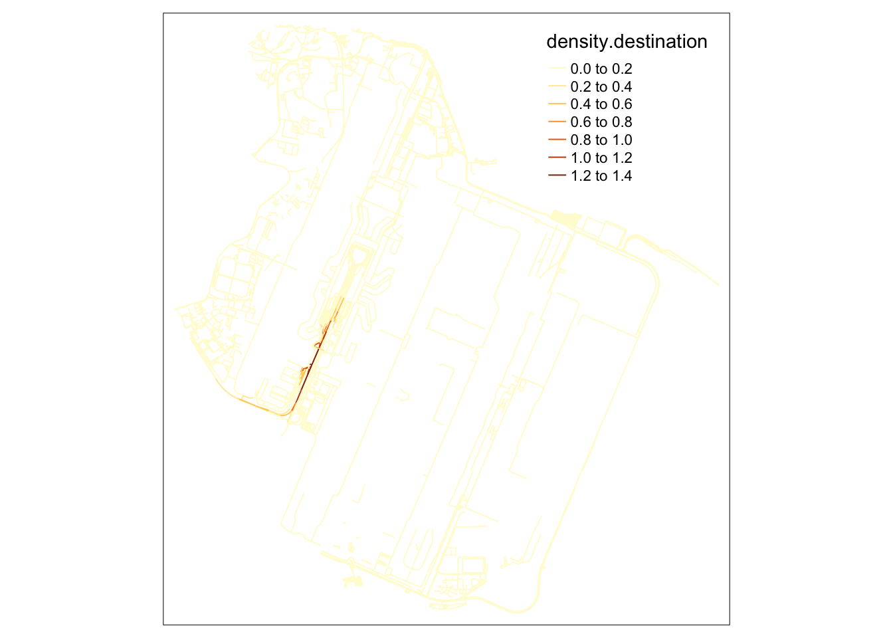
tm_shape(osm_changi) +
tm_lines("black") +
tm_shape(samples2.destination) +
tm_dots("density.destination", style = "kmeans", palette = colorRamp, n = 7, size = 0.1) +
tm_layout(legend.outside = TRUE,
main.title = 'NKDE of Grab Trip Destinations in Changi' , main.title.size = 1)5.2 Woodlands and Woodlands Checkpoint
Based on the KDE calculation, we noticed that the area near the Woodlands checkpoint the general Woodlands area was a hotspot for both trip starts and ends.
From my anecdotal experience, I suspected that Grab rides from the checkpoint may not start very near to it.
I found it difficult to get Grab rides directly outside the checkpoint during peak hours. Usually, commuters will take public buses to nearby areas before booking their rides home.
However, I would like the number and maps to paint a clearer picture of where commuters start and end their grab rides.
NKDE Data Preparation
In the map below, the checkpoint is clearly denoted by the cluster of parallel roads in the top left.
mpsz_woodlands = mpsz %>% filter(PLN_AREA_N=="WOODLANDS")
mpsz_woodlands <- st_intersection(mpsz_woodlands, merged_sg)
osm_woodlands_i <- st_intersection(osm_sg, mpsz_woodlands)
osm_woodlands_idxs <- as.numeric(osm_woodlands_i$osm_id)
osm_woodlands <- osm_sg[osm_sg$osm_id %in% osm_woodlands_idxs, ]
plot(osm_woodlands)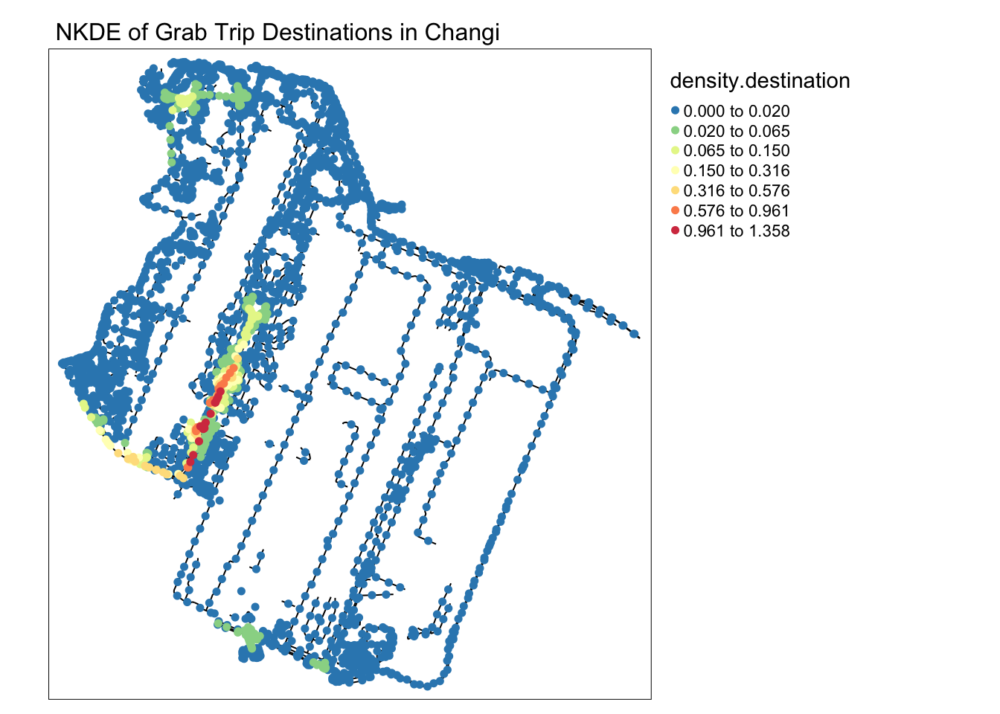
As in the previous example at Changi, we snap the points to the network and constrain the study area.
destination_df.woodlands = st_intersection(destination_df, mpsz_woodlands)
origin_df.woodlands = st_intersection(origin_df, mpsz_woodlands)
origin_df.woodlands.snapped = snapPointsToLines2(origin_df.woodlands, osm_woodlands)
destination_df.woodlands.snapped = snapPointsToLines2(destination_df.woodlands, osm_woodlands)As expected, few rides occur in the direct vicinity of the checkpoint.
tm_shape(osm_woodlands) +
tm_lines() +
tm_shape(destination_df.woodlands.snapped) +
tm_dots(col = "red")NKDE Calculation
Since I want a sharper curve to more clearly identify hotspots on the network, I use a quartic kernel. When trying an adaptive bandwidth, only one hotspot was clearly identified. As such, I have set a static bandwidth.
lixels <- lixelize_lines(osm_woodlands, 200, mindist = 100)
samples <- lines_center(lixels)densities.destination <- nkde(osm_woodlands,
events=destination_df.woodlands.snapped,
w=rep(1, nrow(destination_df.woodlands.snapped)),
samples=samples,
kernel_name="quartic",
bw=500,
div="bw",
method="simple",
digits=1,
tol=1,
grid_shape=c(1,1),
max_depth = 8,
agg=5,
sparse=TRUE,
verbose = FALSE,
study_area = mpsz_woodlands)
densities.origin <- nkde(osm_woodlands,
events=origin_df.woodlands.snapped,
w=rep(1, nrow(origin_df.woodlands.snapped)),
samples=samples,
kernel_name="quartic",
bw=500,
div="bw",
method="simple",
digits=1,
tol=1,
grid_shape=c(1,1),
max_depth = 8,
agg=5,
sparse=TRUE,
verbose = FALSE,
study_area = mpsz_woodlands)samples$density.destination <- densities.destination*1000
lixels$density.destination <- densities.destination*1000
samples$density.origin <- densities.origin*1000
lixels$density.origin <- densities.origin*1000
samples2.origin <- samples[order(samples$density.origin),]
samples2.destination <- samples[order(samples$density.destination),]From this NKDE map, we can already tell that more people use Grab to leave Woodlands than to come in. This applies to the residential areas as well, sufficiently far from the checkpoint.
tm_shape(lixels) +
tm_lines(col="density.origin")tm_shape(lixels) +
tm_lines(col="density.destination")
In this alternative map, I can tell that my suspicion was wrong. While origins are more distributed than destinations in woodlands, a clear hotspot for origins can be identified right outside the checkpoint. This could mean that grab drivers and passengers are willing to brave the traffic jam for a grab ride.
I was also surprised that there were no clear signs that passengers alighted prematurely from their rides to the checkpoint, as was the case at Changi airport.
colorRamp <- brewer.pal(n = 7, name = "Spectral")
colorRamp <- rev(colorRamp)
tm_shape(osm_woodlands) +
tm_lines("black") +
tm_shape(samples2.origin) +
tm_dots("density.origin", style = "kmeans", palette = colorRamp, n = 7, size = 0.1) +
tm_layout(legend.outside = TRUE,
main.title = 'NKDE of Grab Trip Origins in Woodlands' , main.title.size = 1)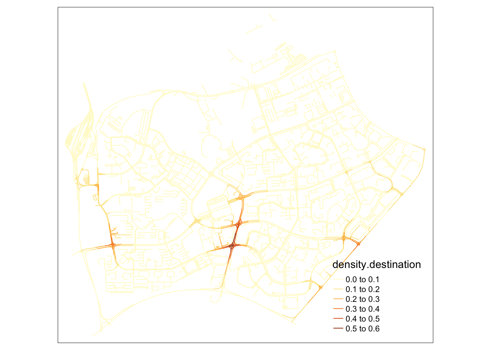
tm_shape(osm_woodlands) +
tm_lines("black") +
tm_shape(samples2.destination) +
tm_dots("density.destination", style = "kmeans", palette = colorRamp, n = 7, size = 0.1) +
tm_layout(legend.outside = TRUE,
main.title = 'NKDE of Grab Trip Destinations in Woodlands' , main.title.size = 1)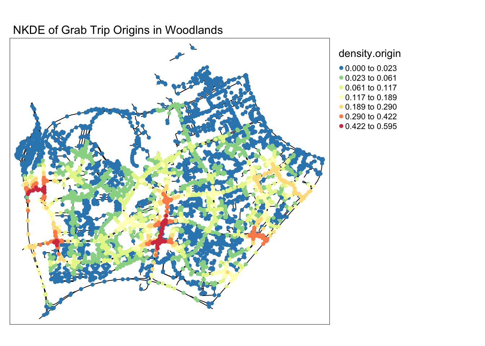
5.3 Downtown
The downtown area is intuitively a slow, congested area during rush hours. In the KDE maps, the downtown area was consistently bright, indicating that many Grab rides started and ended there. In this segment I wanted to see if there were particular areas within the downtown core area that many commuters head to.
NKDE Data Preparation
mpsz_town = mpsz %>% filter(PLN_AREA_N=="DOWNTOWN CORE")
mpsz_town <- st_intersection(mpsz_town, merged_sg)
osm_town_i <- st_intersection(osm_sg, mpsz_town)
osm_town_idxs <- as.numeric(osm_town_i$osm_id)
osm_town <- osm_sg[osm_sg$osm_id %in% osm_town_idxs, ]destination_df.town = st_intersection(destination_df, mpsz_town)
origin_df.town = st_intersection(origin_df, mpsz_town)
origin_df.town.snapped = snapPointsToLines2(origin_df.town, osm_town)
destination_df.town.snapped = snapPointsToLines2(destination_df.town, osm_town)tm_shape(osm_town) +
tm_lines() +
tm_shape(destination_df.town.snapped) +
tm_dots(col = "red")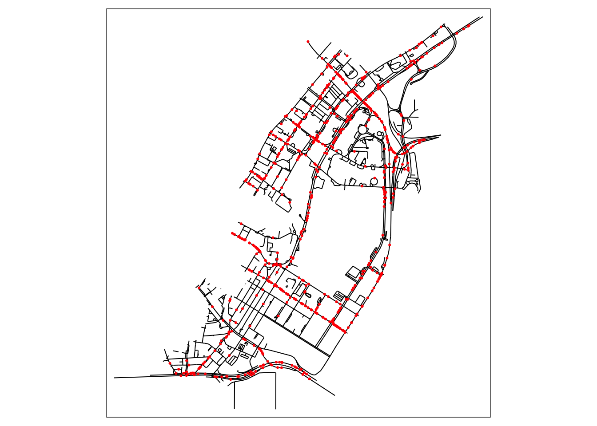
NKDE Calculation
lixels <- lixelize_lines(osm_town, 200, mindist = 100)
samples <- lines_center(lixels)densities.destination <- nkde(osm_town,
events=destination_df.town.snapped,
w=rep(1, nrow(destination_df.town.snapped)),
samples=samples,
kernel_name="quartic",
bw=500,
div="bw",
method="simple",
digits=1,
tol=1,
grid_shape=c(1,1),
max_depth = 8,
agg=5,
sparse=TRUE,
verbose = FALSE,
study_area = mpsz_town)
densities.origin <- nkde(osm_town,
events=origin_df.town.snapped,
w=rep(1, nrow(origin_df.town.snapped)),
samples=samples,
kernel_name="quartic",
bw=500,
div="bw",
method="simple",
digits=1,
tol=1,
grid_shape=c(1,1),
max_depth = 8,
agg=5,
sparse=TRUE,
verbose = FALSE,
study_area = mpsz_town)samples$density.destination <- densities.destination*1000
lixels$density.destination <- densities.destination*1000
samples$density.origin <- densities.origin*1000
lixels$density.origin <- densities.origin*1000
samples2.origin <- samples[order(samples$density.origin),]
samples2.destination <- samples[order(samples$density.destination),]tm_shape(lixels) +
tm_lines(col="density.origin")
tm_shape(lixels) +
tm_lines(col="density.destination")When observing the destinations map, it becomes clear that many intersections in the upper area, near Raffle’s city, become extremely packed with people on their way there. On the southern part of the map, roads near Marina Bay Financial centre also see a lot fo traffic from private hire vehicles.
However, most interesting about these maps is that the origins in this map are primarily clustered around an area with high end office building and attractions, but nothing out of the ordinary relative to the surrounding area.
It might be possible that the area above Lau Pa Sat is used as an area to get a Grab ride after a meal, where smaller roads make it easier for cars to stop to pick up passengers.
colorRamp <- brewer.pal(n = 7, name = "Spectral")
colorRamp <- rev(colorRamp)
par(mfrow=c(1,2))
tm_shape(osm_town) +
tm_lines("black") +
tm_shape(samples2.origin) +
tm_dots("density.origin", style = "kmeans", palette = colorRamp, n = 7, size = 0.1) +
tm_layout(legend.outside = TRUE,
main.title = 'NKDE of Grab Trip Origins in Downtown Core' , main.title.size = 1)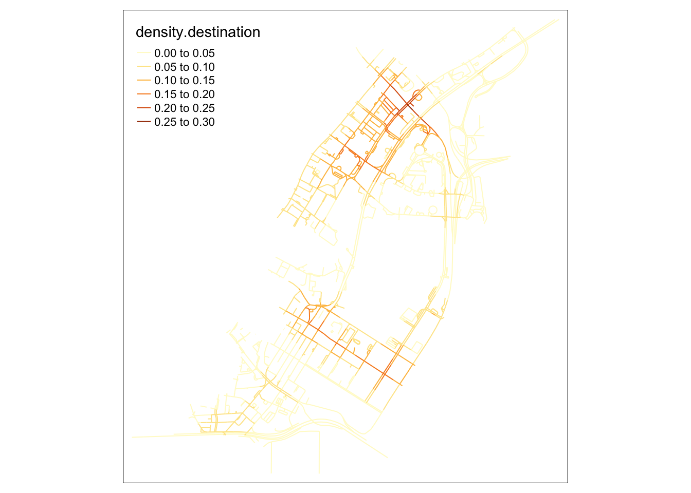
tm_shape(osm_town) +
tm_lines("black") +
tm_shape(samples2.destination) +
tm_dots("density.destination", style = "kmeans", palette = colorRamp, n = 7, size = 0.1) +
tm_layout(legend.outside = TRUE,
main.title = 'NKDE of Grab Trip Destinations in Downtown Core' , main.title.size = 1)5.4 NKDE General Insights
The NKDE is very useful to visualise the impact of events on a network. In the case of traffic, more events likely correlates with more traffic, giving us insights on potentially impacted roads during peak hours. However, NKDE maps are limited by their ambiguous time frame. I would like to visualise smaller subsets of events corresponding to daily patterns, including meal times, commuting times, and perhaps post-nightlife rides back home.
That’s what I hope to learn from the TNKDE!
6.0 TNKDE
To extend the NKDE, we can use the TNKDE to visualise patterns in the network over time. In this section, I will be creating visualisation split over the 24 hours of the day to visualise daily patterns. This should show more variations than a split by the days of the week, where patterns may only correspond to the weekday/weekend differences.
I have kept the bandwidth the same for consistency.
6.1 Changi Airport
From the NKDE in Changi, we were able to see that the airport road had enough legally questionable dropoffs along the road to the airport during periods of congestion. It is possible that not every jam in Changi airport will cause this phenomenon.
From the TNKDE, we can see that drivers need to be careful around the clock, but less so in the evenings, since there will be travelers alighting where they may not be allowed to.
However, this could also be an illusion caused by grab drivers pressing the button to end their trip slightly earlier to prepare to help travelers get their bags out the car.
destination_df.changi.snapped$end_hr <- as.numeric(destination_df.changi.snapped$end_hr)
origin_df.changi.snapped$start_hr <- as.numeric(origin_df.changi.snapped$start_hr)Show the code
lixels <- lixelize_lines(osm_changi, 200, mindist = 100)
sample_points <- lines_center(lixels)
sample_time.destination <- seq(min(destination_df.changi.snapped$end_hr), max(destination_df.changi.snapped$end_hr), 1)
sample_time.origin <- seq(min(origin_df.changi.snapped$start_hr), max(origin_df.changi.snapped$start_hr), 1)
tnkde_densities.destination <- tnkde(lines = osm_changi,
events = destination_df.changi.snapped,
time_field = "end_hr",
w = rep(1, nrow(destination_df.changi.snapped)),
samples_loc = sample_points,
samples_time = sample_time.destination,
kernel_name = "quartic",
bw_net = 300, bw_time = 1,
adaptive = TRUE,
trim_bw_net = 900,
trim_bw_time = 80,
method = "discontinuous",
div = "bw", max_depth = 10,
digits = 2, tol = 0.01,
agg = 15, grid_shape = c(1,1),
verbose = FALSE)
tnkde_densities.origin <- tnkde(lines = osm_changi,
events = origin_df.changi.snapped,
time_field = "start_hr",
w = rep(1, nrow(origin_df.changi.snapped)),
samples_loc = sample_points,
samples_time = sample_time.origin,
kernel_name = "quartic",
bw_net = 300, bw_time = 1,
adaptive = TRUE,
trim_bw_net = 900,
trim_bw_time = 80,
method = "discontinuous",
div = "bw", max_depth = 10,
digits = 2, tol = 0.01,
agg = 15, grid_shape = c(1,1),
verbose = FALSE)
all_densities.destination <- c(tnkde_densities.destination$k)
color_breaks.destination <- classIntervals(all_densities.destination, n = 10, style = "kmeans")
all_maps.destination <- lapply(1:ncol(tnkde_densities.destination$k), function(i){
time <- sample_time.destination[[i]]
sample_points$density <- tnkde_densities.destination$k[,i]
map1 <- tm_shape(osm_changi) +
tm_lines(lwd=0.5) +
tm_shape(sample_points) +
tm_dots(col = "density", size = 0.005,
breaks = color_breaks.destination$brks, palette = plasma(10, direction = -1)) +
tm_layout(legend.show=FALSE, main.title = paste("TNKDE OF GRAB TRIP DESTINATIONS @ CHANGI", time, ":00"), main.title.size = 0.5)
return(map1)
})
tmap_animation(all_maps.destination, filename = "images/tnkde_destination_changi.gif",
width = 1000, height = 1000, dpi = 300, delay = 50)
all_densities.origin <- c(tnkde_densities.origin$k)
color_breaks.origin <- classIntervals(all_densities.origin, n = 10, style = "kmeans")
all_maps.origin<- lapply(1:ncol(tnkde_densities.origin$k), function(i){
time <- sample_time.origin[[i]]
sample_points$density <- tnkde_densities.origin$k[,i]
map1 <- tm_shape(osm_changi) +
tm_lines(lwd=0.5) +
tm_shape(sample_points) +
tm_dots(col = "density", size = 0.005,
breaks = color_breaks.origin$brks, palette = plasma(10, direction = -1)) +
tm_layout(legend.show=FALSE, main.title = paste("TNKDE OF GRAB TRIP ORIGINS @ CHANGI", time, ":00"), main.title.size = 0.5)
return(map1)
})
tmap_animation(all_maps.origin, filename = "images/tnkde_origin_changi.gif",
width = 1000, height = 1000, dpi = 300, delay = 50)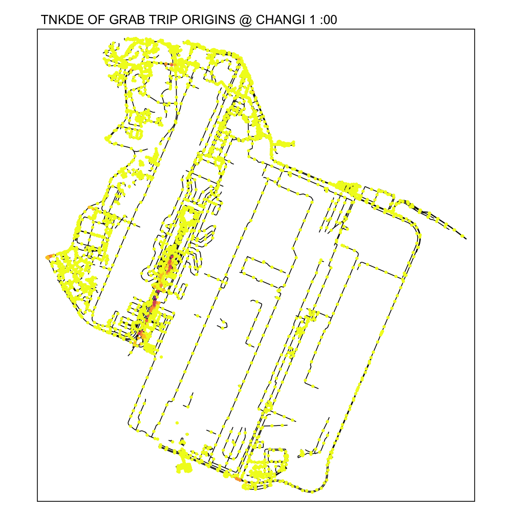
6.2 Woodlands
In this TNKDE, we can observe people leaving the woodlands checkpoint in the early morning and evening. We can also observe some other small hotspots in the lower centre of the map.
While this could be where a bus from the checkpoint may stop, it is difficult to say for sure. However, this map shows that there are many private hire vehicles in the lower middle of this study area throughout the day, perhaps indicating a congestion issue as a result of suboptimally designed roads.
destination_df.woodlands.snapped$end_hr <- as.numeric(destination_df.woodlands.snapped$end_hr)
origin_df.woodlands.snapped$start_hr <- as.numeric(origin_df.woodlands.snapped$start_hr)Show the code
lixels <- lixelize_lines(osm_woodlands, 200, mindist = 100)
sample_points <- lines_center(lixels)
sample_time.destination <- seq(min(destination_df.woodlands.snapped$end_hr), max(destination_df.woodlands.snapped$end_hr), 1)
sample_time.origin <- seq(min(origin_df.woodlands.snapped$start_hr), max(origin_df.woodlands.snapped$start_hr), 1)
tnkde_densities.destination <- tnkde(lines = osm_woodlands,
events = destination_df.woodlands.snapped,
time_field = "end_hr",
w = rep(1, nrow(destination_df.woodlands.snapped)),
samples_loc = sample_points,
samples_time = sample_time.destination,
kernel_name = "quartic",
bw_net = 300, bw_time = 1,
adaptive = TRUE,
trim_bw_net = 900,
trim_bw_time = 80,
method = "discontinuous",
div = "bw", max_depth = 10,
digits = 2, tol = 0.01,
agg = 15, grid_shape = c(1,1),
verbose = FALSE)
tnkde_densities.origin <- tnkde(lines = osm_woodlands,
events = origin_df.woodlands.snapped,
time_field = "start_hr",
w = rep(1, nrow(origin_df.woodlands.snapped)),
samples_loc = sample_points,
samples_time = sample_time.origin,
kernel_name = "quartic",
bw_net = 300, bw_time = 1,
adaptive = TRUE,
trim_bw_net = 900,
trim_bw_time = 80,
method = "discontinuous",
div = "bw", max_depth = 10,
digits = 2, tol = 0.01,
agg = 15, grid_shape = c(1,1),
verbose = FALSE)
all_densities.origin <- c(tnkde_densities.origin$k)
color_breaks.origin <- classIntervals(all_densities.origin, n = 10, style = "kmeans")
all_maps.origin <- lapply(1:ncol(tnkde_densities.origin$k), function(i){
time <- sample_time.origin[[i]]
sample_points$density <- tnkde_densities.origin$k[,i]
map1 <- tm_shape(osm_woodlands) +
tm_lines(lwd=0.5) +
tm_shape(sample_points) +
tm_dots(col = "density", size = 0.005,
breaks = color_breaks.origin$brks, palette = plasma(10, direction = -1)) +
tm_layout(legend.show=FALSE, main.title = paste("TNKDE OF GRAB TRIP ORIGINS @ WOODLANDS", time, ":00"), main.title.size = 0.5)
return(map1)
})
tmap_animation(all_maps.origin, filename = "images/tnkde_origin_woodlands.gif",
width = 1000, height = 1000, dpi = 300, delay = 50)
all_densities.destination <- c(tnkde_densities.destination$k)
color_breaks.destination <- classIntervals(all_densities.destination, n = 10, style = "kmeans")
all_maps.destination<- lapply(1:ncol(tnkde_densities.destination$k), function(i){
time <- sample_time.destination[[i]]
sample_points$density <- tnkde_densities.destination$k[,i]
map1 <- tm_shape(osm_woodlands) +
tm_lines(lwd=0.5) +
tm_shape(sample_points) +
tm_dots(col = "density", size = 0.005,
breaks = color_breaks.destination$brks, palette = plasma(10, direction = -1)) +
tm_layout(legend.show=FALSE, main.title = paste("TNKDE OF GRAB TRIP DESTINATIONS @ WOODLANDS ", time, ":00"), main.title.size = 0.5)
return(map1)
})
tmap_animation(all_maps.destination, filename = "images/tnkde_destination_woodlands.gif",
width = 1000, height = 1000, dpi = 300, delay = 50)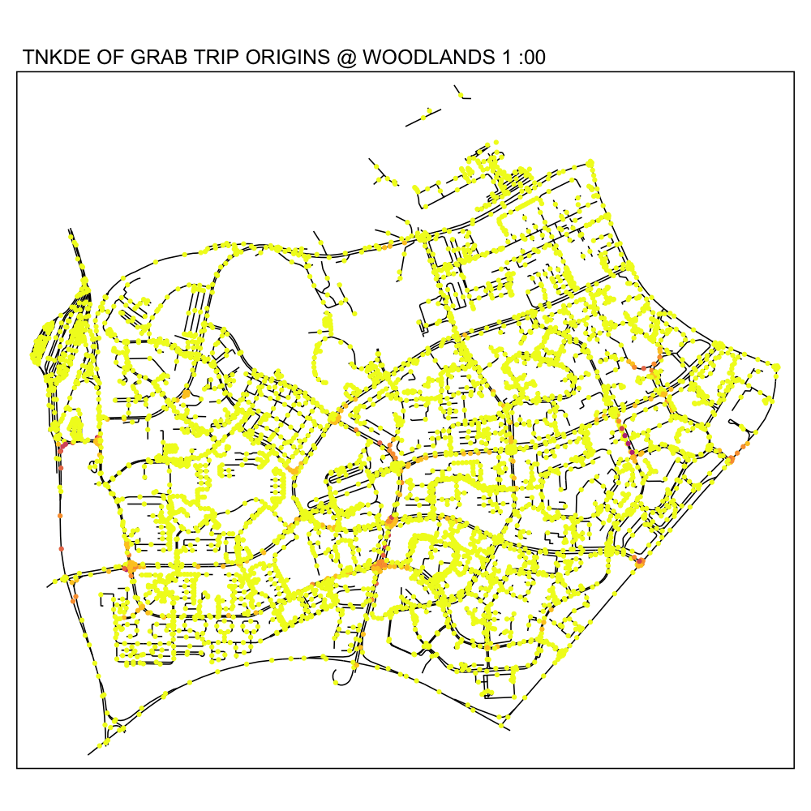 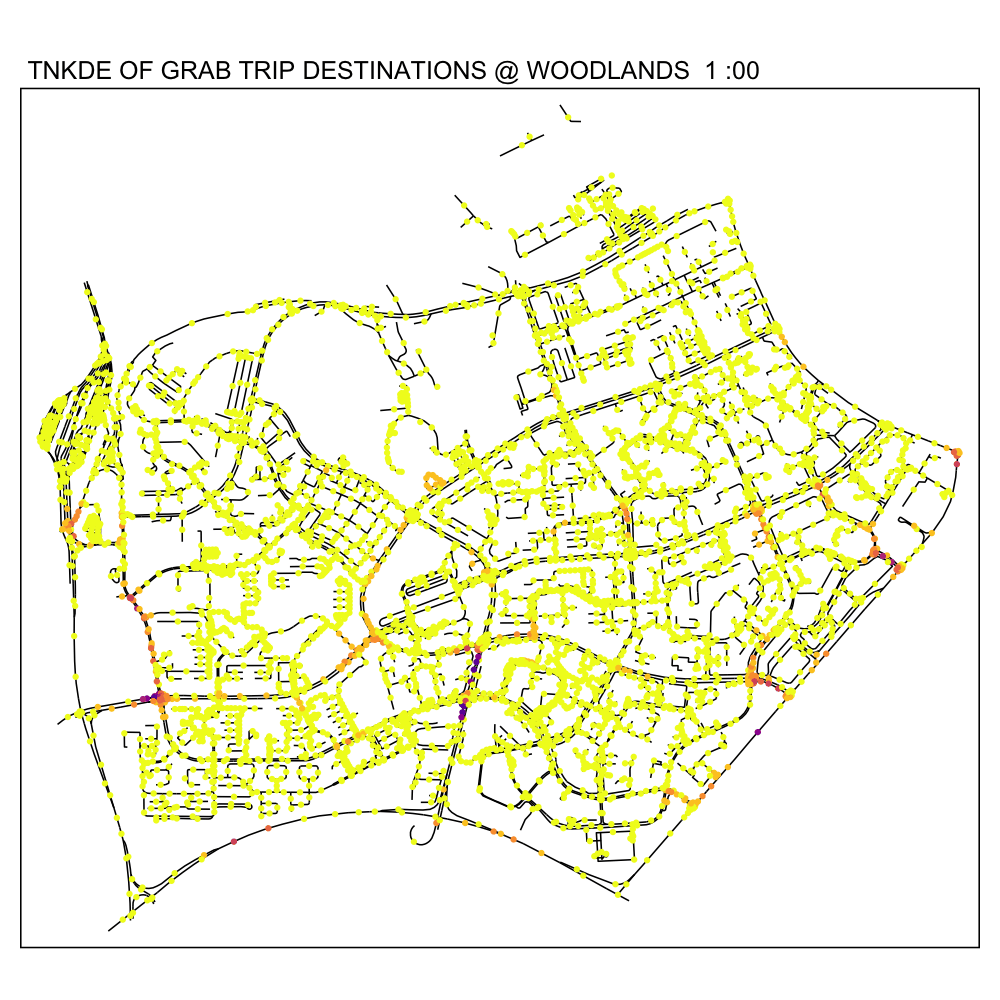
6.3 Downtown Core
From the TNKDE, we can see the southern part of the map light up after midnight! This might indicate that the area, especially around Lau Pa Sat, contributes to Grab ride origins as a place to relax in the evenings. The area also becomes busy around lunch hour, as expected.
In contrast, the destinations map does not light up as much. Although the NKDE may indicate heavy congestion due to private hire vehicles, the TNKDE shows that this may not be as persistent a problem as expected.
destination_df.town.snapped$end_hr <- as.numeric(destination_df.town.snapped$end_hr)
origin_df.town.snapped$start_hr <- as.numeric(origin_df.town.snapped$start_hr)Show the code
lixels <- lixelize_lines(osm_town, 200, mindist = 100)
sample_points <- lines_center(lixels)
sample_time.destination <- seq(min(destination_df.town.snapped$end_hr), max(destination_df.town.snapped$end_hr), 1)
sample_time.origin <- seq(min(origin_df.town.snapped$start_hr), max(origin_df.town.snapped$start_hr), 1)
tnkde_densities.destination <- tnkde(lines = osm_town,
events = destination_df.town.snapped,
time_field = "end_hr",
w = rep(1, nrow(destination_df.town.snapped)),
samples_loc = sample_points,
samples_time = sample_time.destination,
kernel_name = "quartic",
bw_net = 300, bw_time = 1,
adaptive = TRUE,
trim_bw_net = 900,
trim_bw_time = 80,
method = "discontinuous",
div = "bw", max_depth = 10,
digits = 2, tol = 0.01,
agg = 15, grid_shape = c(1,1),
verbose = FALSE)
tnkde_densities.origin <- tnkde(lines = osm_town,
events = origin_df.town.snapped,
time_field = "start_hr",
w = rep(1, nrow(origin_df.town.snapped)),
samples_loc = sample_points,
samples_time = sample_time.origin,
kernel_name = "quartic",
bw_net = 300, bw_time = 1,
adaptive = TRUE,
trim_bw_net = 900,
trim_bw_time = 80,
method = "discontinuous",
div = "bw", max_depth = 10,
digits = 2, tol = 0.01,
agg = 15, grid_shape = c(1,1),
verbose = FALSE)
all_densities.origin <- c(tnkde_densities.origin$k)
color_breaks.origin <- classIntervals(all_densities.origin, n = 10, style = "kmeans")
all_maps.origin <- lapply(1:ncol(tnkde_densities.origin$k), function(i){
time <- sample_time.origin[[i]]
sample_points$density <- tnkde_densities.origin$k[,i]
map1 <- tm_shape(osm_town) +
tm_lines(lwd=0.5) +
tm_shape(sample_points) +
tm_dots(col = "density", size = 0.005,
breaks = color_breaks.origin$brks, palette = plasma(10, direction = -1)) +
tm_layout(legend.show=FALSE, main.title = paste("TNKDE OF GRAB TRIP ORIGINS @ DOWNTOWN CORE", time, ":00"), main.title.size = 0.5)
return(map1)
})
tmap_animation(all_maps.origin, filename = "images/tnkde_origin_town.gif",
width = 1000, height = 1000, dpi = 300, delay = 50)
all_densities.destination <- c(tnkde_densities.destination$k)
color_breaks.destination <- classIntervals(all_densities.destination, n = 10, style = "kmeans")
all_maps.destination<- lapply(1:ncol(tnkde_densities.destination$k), function(i){
time <- sample_time.destination[[i]]
sample_points$density <- tnkde_densities.destination$k[,i]
map1 <- tm_shape(osm_town) +
tm_lines(lwd=0.5) +
tm_shape(sample_points) +
tm_dots(col = "density", size = 0.005,
breaks = color_breaks.destination$brks, palette = plasma(10, direction = -1)) +
tm_layout(legend.show=FALSE, main.title = paste("TNKDE OF GRAB TRIP DESTINATIONS @ DOWNTOWN CORE ", time, ":00"), main.title.size = 0.5)
return(map1)
})
tmap_animation(all_maps.destination, filename = "images/tnkde_destination_town.gif",
width = 1000, height = 1000, dpi = 300, delay = 50)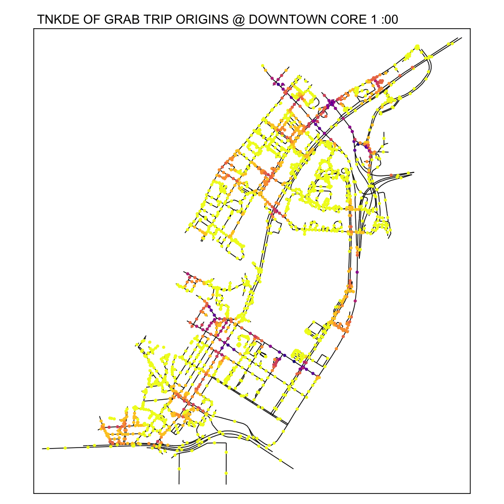
7.0 Conclusions
The Grab Posisi dataset has yielded many interesting insights with Spatial Point Analysis. From commuter behaviour and safety in Changi airport, investigating private hire vehicle use around the Woodlands checkpoint to visualising the daily patterns of the downtown core, spatial point analysis has proven itself to be a powerful tool.
In terms of policy making, anecdotal evidence is not sufficient. Reported patterns through interviews may not truly reflect the patterns in crowded areas. Spatial Point Analysis can contribute heavily to the public good by identifying dangerous patterns, inefficiencies, and ways to facilitate life in a society that just wants to have dinner after work at Lau Pa Sat. Although the public may never know the full extent of the planning and analysis that goes on behind the scenes and drives decision making, NKDE and TNKDE maps help paint simple yet effective messages to build understanding and cohesion.
8.0 Personal Learnings
This exercise has been a rigorous and challenging introduction to r programming. Dealing with many issues related to data types, formats and other complexities associated with geospatial data.
Although this exercise became very time consuming and frustrating at times, I believe that the next exercises will be much faster, having gone through extensive documentation and numerous roadblocks.
Ultimately, this has been a fun and interesting experience about finding patterns otherwise invisible to the naked eye.